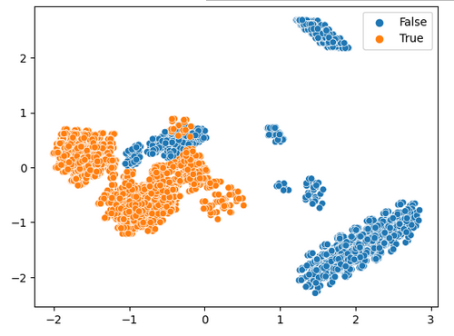

https://www.kaggle.com/datasets/uciml/mushroom-classification
Jupyter Notebook (Code): https://github.com/kinglouisph/datamining4
What I am attempting to do here is separate the mushroom date into groups, identify the characteristics of these groups, and identify poison mushrooms.
Note: Identifying poison mushrooms is not the primary goal, otherwise I would use test/training groups and a classification algorithm. The models all have poison as an input. Mostly I am using poison to make sure the groups are meaningful.
An algorithm like this could be used by biologists to determine what different species are. A negative impact is that it could produce misleading results and confuse people
Clustering is separating data into groups (clusters). The primary method used here is k-means. k-means divides the data into k clusters by generating k random points, assigning each datapoint to it's closest point, and then moving each point to the mean of it's cluster. This is repeated until it stabilizes or goes on for too long.
The data I used was a database of mushrooms from kaggle. it contains 23 features (I won't name them all here) and 23 species of mushroom. There is 8124 samples. All the features are categorical. The most important feature is class, poisonous or edible.
The pre-precessing for this was very simple. The only thing I did was add one-hot encoding.

There are clearly multiple separate clusters in this dataset. It also looks like a reasonable separations could be made between poisonous and edible data.
These groups generally overlap with the poison one. k-means is likely finding other important features.
There seems to be some similarity with the groups in poison.
 Manually dividing these groups into poisonous or safe, there is definitely overlap. This is a good sign that the groups are meaningful.Used a script this time to determine safe and poisonous groups, I can't spot any errors in this one. The correct map is show below for reference. From this we can conclude that there are almost certainly different groups of mushroom, these groups have meaningful differences, and there are significant differences between poisonous and non-poisonous mushrooms.
I tried using agglomerative clustering to see if the results would be different. Absolute garbage. Although the results were somewhat similar, I think many groups simply do not make sense (the central "islands").
There is definite overlap in the groups. This is another sign the clusters are based in reality.
This project was an overall success; there are clearly identified groups in the mushroom data. It is likely the species, as they overlap with traits like habitats and poison. An algorithm like this probably would be useful for more complex and practical tasks, although any actual scientists would probably want to use something fancier than k-means.